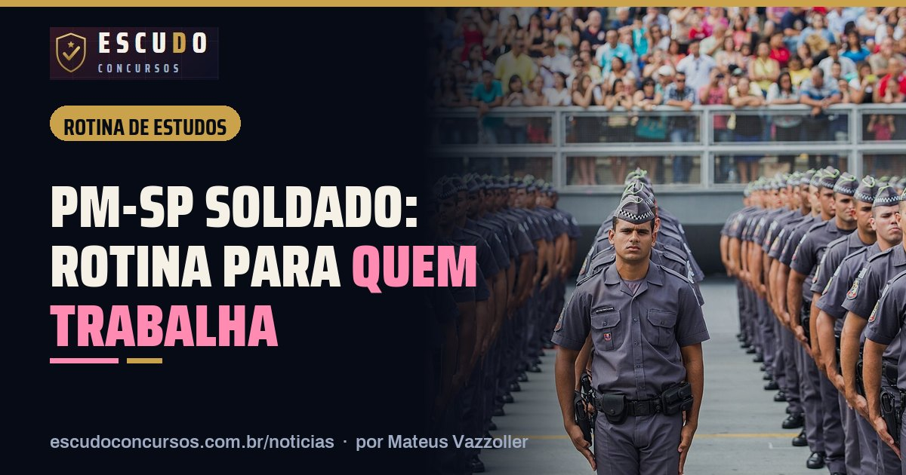

PM-SP Soldado: rotina de estudos para quem trabalha, dia a dia até a prova de 28/02/2027
Rotina de estudosPublicado em 15 de novembro de 2026 · por Mateus Vazzoller, ESCUDO Concursos

Quem trabalha o dia todo tem 15 semanas entre segunda-feira, 16/11/2026, e a prova prevista para 28/02/2027. Esta rotina cabe nisso com 13 horas por semana: 1h30 por dia útil, quebrada em três blocos curtos, mais 3 horas no sábado e 2h30 no domingo. Cada bloco tem a matéria certa para o momento do dia, na proporção das questões do edital.
| Prova (prevista) | 28/02/2027, à tarde, 5 horas |
|---|---|
| Tempo até a prova | 15 semanas a partir de 16/11/2026 |
| Carga da rotina | 13 horas por semana |
| Dias úteis | 1h30 em três blocos: manhã, almoço e noite |
| Fim de semana | 3 horas no sábado e 2h30 no domingo |
| Inscrições | até 22/12/2026, às 23h59, no site da VUNESP |
Por que blocos curtos funcionam para quem trabalha?
Depois de um dia de serviço, ninguém rende duas horas seguidas de teoria. Três blocos curtos aproveitam a cabeça descansada da manhã para Português, que é um terço da objetiva, o intervalo do almoço ou o trajeto para matéria leve no celular (lei seca e Informática) e a noite para Matemática e Conhecimentos Gerais, que pedem papel e caneta. O fim de semana fica com o que exige tempo corrido: questões em sequência e redação cronometrada.
Se o seu turno é diferente (escala, noite, plantão), mantenha a lógica: o bloco mais descansado do dia vai para Português, e o mais curto vai para leitura no celular.
A semana, dia a dia
| Dia | Manhã, antes do trabalho (30 min) | Almoço ou trajeto (20 min) | Noite (40 min) |
|---|---|---|---|
| Segunda | Português: gramática | Administração Pública: lei seca | Matemática |
| Terça | Português: interpretação de texto | Informática | Conhecimentos Gerais: História |
| Quarta | Português: gramática | Administração Pública: lei seca | Matemática |
| Quinta | Português: interpretação de texto | Atualidades | Conhecimentos Gerais: Geografia |
| Sexta | Português: questões | Informática | Matemática |
| Fim de semana | O que fazer | Tempo |
|---|---|---|
| Sábado | Questões de Português | 1h30 |
| Sábado | Questões de Matemática | 45 min |
| Sábado | Questões de Conhecimentos Gerais | 45 min |
| Domingo | Uma redação cronometrada, de 21 a 30 linhas, e a reescrita | 1h30 |
| Domingo | Revisão dos erros da semana | 1h |
Quanto cada matéria recebe
| Matéria | Questões na prova | Horas por semana |
|---|---|---|
| Língua Portuguesa e Interpretação de Texto | 20 | 4h |
| Matemática | 15 | 2h45 |
| Conhecimentos Gerais, com Atualidades | 15 | 2h25 |
| Noções de Administração Pública | 5 | 40 min |
| Noções Básicas de Informática | 5 | 40 min |
| Redação | 1 texto, 40 pontos | 1h30 |
| Revisão dos erros | 1h | |
| Total | 13h |
Administração Pública ficou no almoço porque é leitura de artigo de lei (Constituição Federal, Constituição do Estado, Lei de Acesso à Informação e Decreto estadual nº 68.155/2023), que dá para fazer no celular. A redação não sai do domingo em nenhuma semana: ela vale 40 dos 100 pontos da classificação.
Como a rotina muda até a prova
| Semanas | Período | O que muda |
|---|---|---|
| 1 a 9 | 16/11/2026 a 17/01/2027 | A grade acima, com teoria nas manhãs e noites |
| 10 a 13 | 18/01/2027 a 14/02/2027 | As noites viram só questões no estilo da VUNESP; no domingo, duas redações. Primeiro simulado completo no sábado 13/02/2027 |
| 14 e 15 | 15/02/2027 a 28/02/2027 | Simulado completo de 5 horas no sábado 20/02/2027, à tarde, como no dia da prova; nos dias úteis, só revisão dos erros e da lei seca |
Entre 15 e 19/02/2027, confira a convocação com data, horário e local da prova no Diário Oficial do Estado. Para a divisão em fases com 15 horas por semana, veja o cronograma de 16 semanas da PM-SP.
O que fazer na semana que não deu certo
Hora extra, plantão dobrado, filho doente: vai acontecer. A regra é simples. Perdeu um bloco do dia útil, não tente compensar à noite com o dobro; passe a matéria para o sábado e corte primeiro as questões de Conhecimentos Gerais. O que não se corta é o bloco de Português da manhã e a redação de domingo, porque Português e Matemática garantem os 30 pontos mínimos da objetiva e só com eles a redação é corrigida.
E não esqueça a inscrição: ela vai até as 23h59 de 22/12/2026, só pelo site da VUNESP, com taxa de R$ 110,00. Quem quer vestir a farda cinza e passar pelo Curso de Formação de Praças precisa, antes, garantir o nome na lista de inscritos.
Curso ESCUDO Soldado da Polícia Militar de São Paulo em PDF: 75 capítulos e 345 questões, de acordo com o edital aberto, 2 simulados de 60 questões. De R$ 47 por R$ 37 com o cupom PMESP37 até 22/12/2026.
Ver o curso
Perguntas frequentes
Dá para passar na PM-SP estudando 1h30 por dia?
Com a rotina completa, que soma o fim de semana, são 13 horas por semana durante 15 semanas. É uma carga possível para quem trabalha, desde que os blocos sigam o peso das matérias: Português e Matemática somam 35 das 60 questões.
Qual o melhor horário para estudar trabalhando?
O bloco em que você está mais descansado, em geral antes do trabalho, deve ficar com Português, a matéria de maior peso. O intervalo do almoço ou o trajeto serve para leitura leve, como lei seca e Informática.
Quando treinar a redação?
Todo domingo, desde a primeira semana, com tempo marcado e de 21 a 30 linhas. A partir da semana 10 são duas redações por domingo.
Leia também
- Rotina de estudosCronograma Agente Administrativo de Curitiba: 3 semanas até a prova de 13/12/2026
24 de novembro de 2026 · Cronograma de 3 semanas para a prova da FAFIPA de 13/12/2026 para Agente Administrativo de Curitiba: meta de acertos por área, plano semanal e reta final.
- Rotina de estudosCronograma de estudos PM-PE Soldado: 13 semanas até a prova de 21/02/2027
22 de novembro de 2026 · Plano de 13 semanas para a prova do Instituto AOCP de 21/02/2027 para Soldado da PM de Pernambuco: 15 horas por semana, Bloco III primeiro e redação semanal.
- Rotina de estudosCronograma de estudos TJSP Escrevente: 16 semanas até a prova de 14/03/2027
20 de novembro de 2026 · Plano de 16 semanas para a prova da Vunesp de 14/03/2027 para Escrevente do TJSP: 15 horas por semana, Direito primeiro e uma redação por semana.
Guia completo do concurso: edital, vagas e o que cai · Mais notícias e dicas de concursos